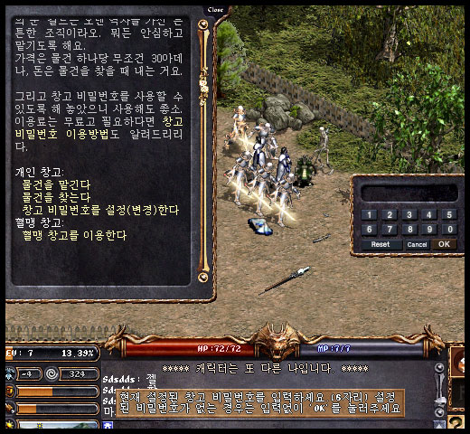
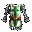
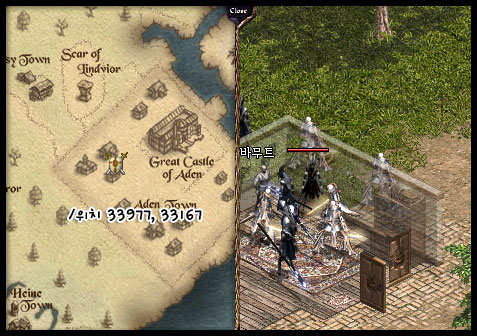
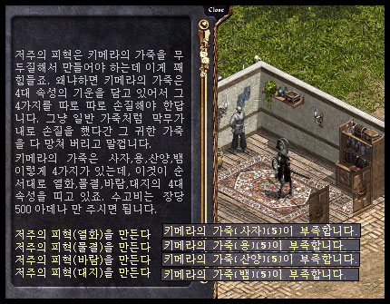
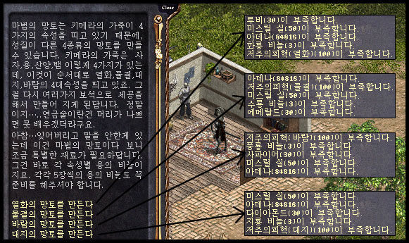
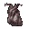
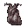

| 2003年11月13日
韓國測試伺服器最近兩週更新內容
來源：韓國天堂官方網站公告
英文翻譯：Lineage
Center
1.
在倉庫加入了密碼保護功能，現家可以為倉庫設定一個密碼，然後在每次存取道具時都要輸入該密碼。假如在十分鐘你多次輸入錯誤的密碼，你的帳號會被鎖定。這時你便需要到官網登入，在"Happy
Click"的部分內通知當值的GM。目前這個倉庫密碼系統還在測試當中，在測試足夠後便會在正式伺服器上更新。

來源：Lineage
Playforum
英文翻譯：Lineage
Center
2.
部分道具更新了圖示（它們放在地上時的圖像亦有更改）：
| 圖示 |
名稱 |
圖示 |
名稱 |
圖示 |
名稱 |
|
力量項鍊 |
|
瞬間移動控制戒指 |
|
水龍鱗盔甲 |
|
敏捷項鍊 |
 |
形體控制戒指 |
|
地龍鱗盔甲 |
|
體質項鍊 |
 |
抗魔法鍊甲 |
|
火龍鱗盔甲 |
|
智力項鍊 |
|
抗魔法頭盔 |
|
風龍鱗盔甲 |
|
精神項鍊 |
 |
精靈盾牌 |
|
元素石 |
|
魅力項鍊 |
|
伊娃之盾 |
|
皮夾克 |
|
妖魔戰士護身符 |
|
漂浮之眼肉 |
|
|
3. 在亞丁城裡加入了製造各屬性斗篷的NPC，村料如下：
詛咒之皮(火)：奇美拉之皮(獅子)5個
詛咒之皮(水)：奇美拉之皮(龍)5個
詛咒之皮(風)：奇美拉之皮(羊)5個
詛咒之皮(地)：奇美拉之皮(蛇)5個
（由於不太清楚作者的角色有多少金幣，因此以下的金幣需求打了問號。）
火之斗篷：紅寶石(30)，米索莉線(50)，火龍鱗(3)，詛咒之皮(火)(100)，金幣(?)
水之斗篷：藍寶石(30)，米索莉線(50)，水龍鱗(3)，詛咒之皮(水)(100)，金幣(?)
風之斗篷： 鑽石(30)，米索莉線(50)，風龍鱗(3)，詛咒之皮(風)(100)，金幣(?)
地之斗篷：綠寶石(30)，米索莉線(50)，地龍鱗(3)，詛咒之皮(地)(100)，金幣(?)



4.
在大約一周前，韓國測試伺服器亦加入了以下圖示：
   |
韓國正式伺服器11月12日更新內容
來源：韓國天堂官方網站公告
英文翻譯：Lineage
Center
1. 加入了黑妖的新手任務。
2.
血盟小屋在拍賣時，你仍然可以使用該血盟小屋直至拍賣完成。
3. 角色低於等級6不能使用密頻或隊頻。
4. 沒有盟徽的血盟不能再對城堡宣戰。
5. 燈油現在會疊在一起。
6. 新手道具的重量減輕了。
7. 黑妖30級任務中的道具"暗殺名單"掉下率提高。
8. 黑妖45級任務中的"雪怪首級"可以從道具欄刪除。
9. 投擲飛刀的價格下調。
10. 黑妖職業不能再使用小型風之頭盔。
11.
隊伍類的治癒術（生命的祝福）不能對隔牆的隊友産生作用。（體力回復術是血盟類的治癒魔法，暫不受影響）
|